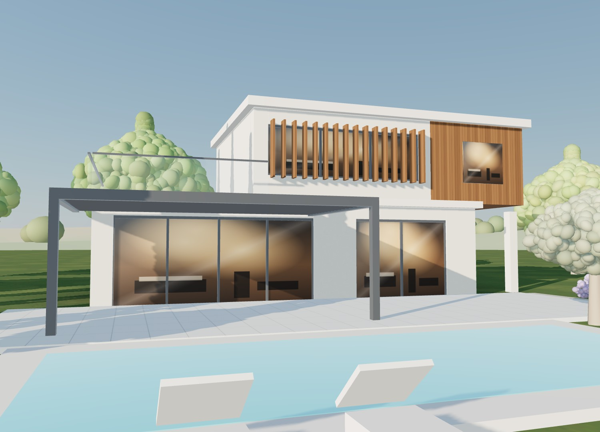

Guy Moricearchitecte à Estillac
Maisons neuves, extensions et rénovations dans le pays d'Agen, depuis 1982.
Prendre rendez-vousDepuis plus de quarante ans, Guy Morice dessine des maisons pensées pour leur terrain : la course du soleil, la vue, les vents et les règles de chaque commune.
- Maisons neuvesde l'esquisse au chantier
- Extensionsagrandir sans dénaturer
- Rénovationsgranges, maisons anciennes
- Permis de construiredossier et suivi en mairie
La vitrine de l'atelier
Chaque cadre accueillera un projet de Guy Morice, avec sa photographie, le lieu et l'année.

44ans
d'expérience
Architecte indépendant depuis 1982
Formé à l'architecture à Toulouse, Guy Morice a ouvert son atelier en 1982. Depuis, il conçoit et suit lui-même chaque projet, de l'esquisse à la réception des travaux.
- 1981
Études d'architecture à Toulouse
Unité pédagogique d'architecture de Toulouse, aujourd'hui École nationale supérieure d'architecture de Toulouse.
- 1982
Ouverture de son atelier
Installation à son compte comme architecte indépendant.
- Aujourd'hui
Estillac, pays d'Agen
Projets dans l'Agenais et le Bruilhois.
Concevoir avec le soleil
À Estillac, à midi, le soleil monte à 69° le 21 juin et à 22° seulement le 21 décembre. Un débord de toit bien dimensionné arrête le soleil d'été et laisse entrer celui d'hiver : la maison reste fraîche l'été et se chauffe en partie seule l'hiver.
 Pont-canal d'Agen. Photo Benjamin Smith, CC BY-SA 4.0
Pont-canal d'Agen. Photo Benjamin Smith, CC BY-SA 4.0
Le pays d'Agen
Vallée de la Garonne, coteaux du Bruilhois, pierre blanche et brique : chaque projet s'inscrit dans un paysage que Guy Morice connaît depuis toujours.